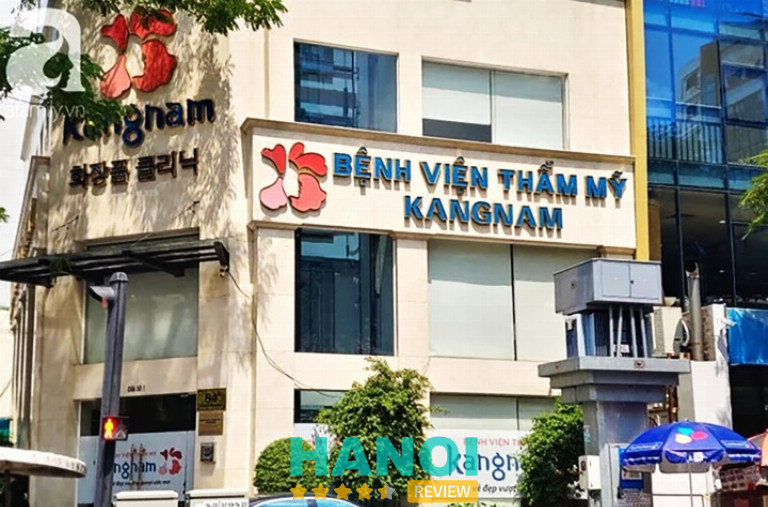
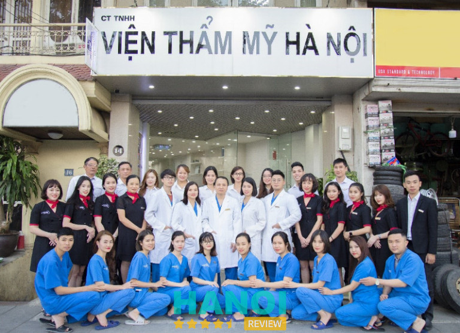
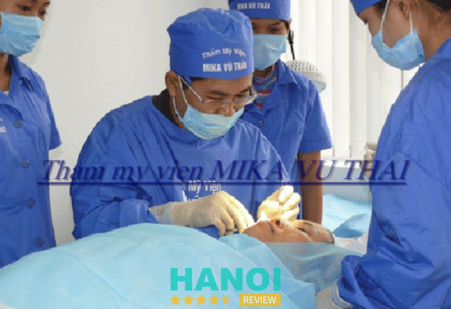
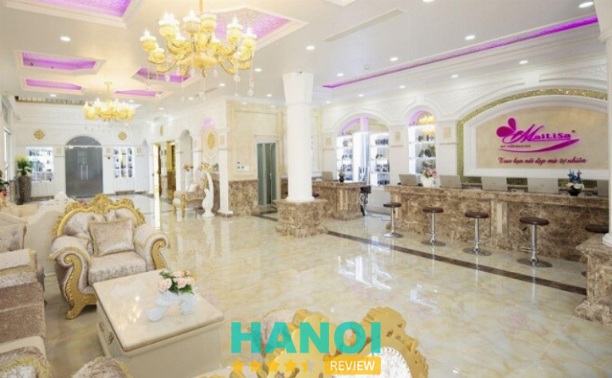
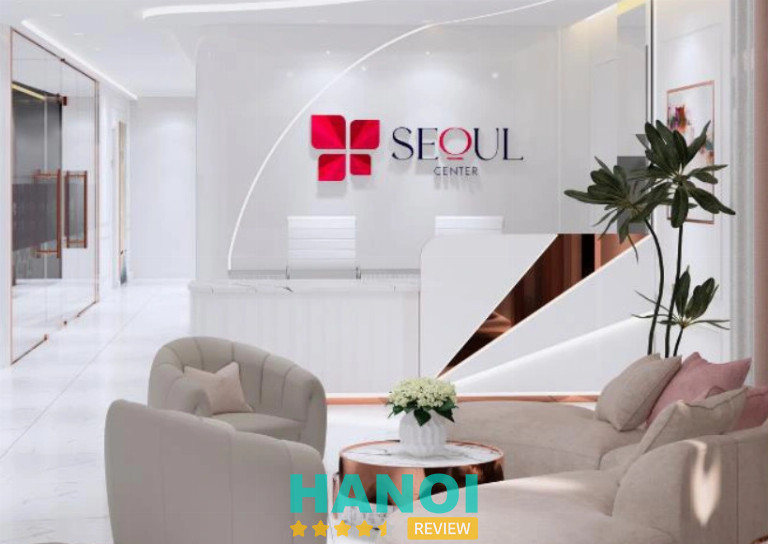
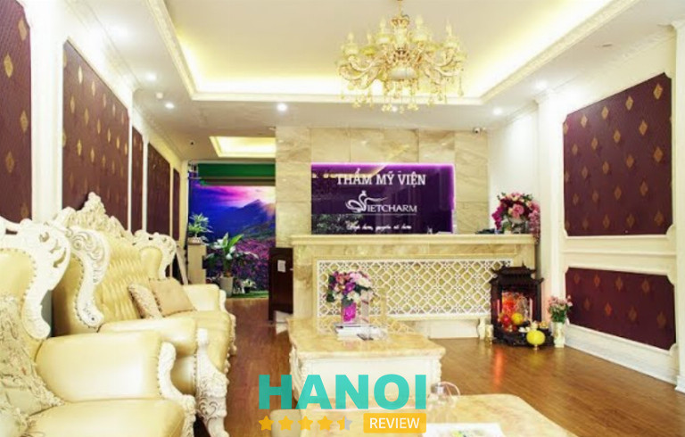
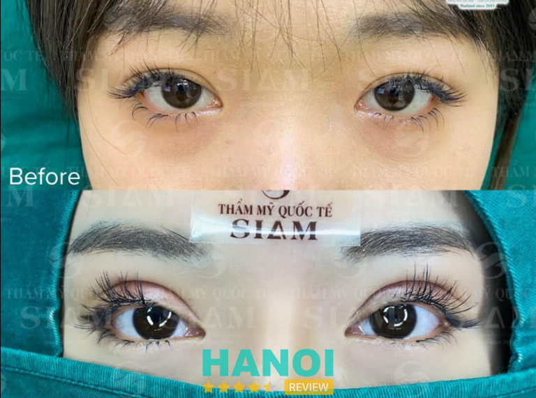

11 Địa chỉ cắt mí mắt tại Hà Nội uy tín, dịch vụ tốt, giá rẻ
Địa chỉ cắt mí mắt tại Hà Nội uy tín, tốt nhất hiện nay? Đã có không ít người đặt ra câu hỏi này ở các hội nhóm làm đẹp. Bởi việc tìm một cơ sở an toàn, chất lượng để làm đẹp là điều hết sức cần thiết.
Dưới đây là danh sách 11 địa chỉ cắt mí mắt tại Hà Nội có dịch vụ tốt, mọi người có thể tham khảo để sở hữu cho mình một đôi mắt đẹp tự nhiên nhé.
Top 11 địa chỉ cắt mí mắt ở Hà Nội chất lượng nhất
Hiện nay, nhờ vào sự hỗ trợ đắc lực của nhiều máy móc, thiết bị hiện đại mà các ca phẫu thuật cắt mí mắt được diễn ra khá nhẹ nhàng, không gây cảm giác đau đớn, không để lại sẹo hay xảy ra biến chứng gì. Thời gian để thực hiện một ca phẫu thuật cũng khá ngắn, và thời gian hồi phục cũng rất nhanh, chỉ khoảng 1 tháng.
Nếu như vậy thì cơ bản phương pháp làm đẹp này không có gì để lo ngại. Nhưng tại sao mọi người luôn lo lắng và gặp nhiều khó khăn trong việc tìm địa chỉ? Đó là do có nhiều trường hợp chọn nhầm nơi kém chất lượng. Hậu quả dẫn đến là mí mắt bị nhiễm trùng, sưng đỏ, nổi mủ, có người thì bị để lại sẹo, mí mắt còn “tệ” hơn lúc chưa thẩm mỹ.
Chính vì thế, mọi người khi có nhu cầu, cần tìm đến những nơi uy tín không chỉ về chất lượng dịch vụ mà còn đảm bảo trình độ tay nghề của bác sĩ. Dưới đây là 10 địa chỉ cắt mí mắt tại Hà Nội có chi phí thấp, chất lượng cao được HaNoiReview chọn lọc kỹ càng. Cùng tham khảo nhé!
Viện thẩm mỹ Y khoa Dr. Hải Lê
Viện Thẩm mỹ Y khoa Dr. Hải Lê là một trong những địa chỉ đáng tin cậy hàng đầu tại Hà Nội về lĩnh vực thẩm mỹ mắt, đặc biệt nổi bật với dịch vụ cắt mí. Được thành lập và điều hành bởi Bác sĩ Hải Lê, người có hơn 20 năm kinh nghiệm trong ngành thẩm mỹ, Viện thẩm mỹ Y khoa Dr. Hải Lê cam kết mang đến cho khách hàng những dịch vụ chất lượng cao, an toàn và hiệu quả.
Cơ sở vật chất và trang thiết bị tại Viện Thẩm mỹ Y khoa Dr. Hải Lê được đầu tư hiện đại, đạt chuẩn quốc tế, tạo nên một không gian sang trọng và thoải mái cho khách hàng. Viện có phòng khám và phòng phẫu thuật được thiết kế theo tiêu chuẩn y tế cao, đảm bảo sự vô trùng, an toàn tuyệt đối trong suốt quá trình thăm khám và điều trị.
Viện Thẩm mỹ Y khoa Dr. Hải Lê cung cấp một loạt các dịch vụ cắt mí mắt đa dạng, phù hợp với nhiều nhu cầu và đặc điểm mắt của từng khách hàng.
- Cắt mí A.I Nano Matrix Deep: Sử dụng công nghệ AI và Nano Matrix giúp tạo nếp mí tự nhiên, chính xác và bền lâu. Phương pháp này mang đến kết quả hoàn hảo, giúp đôi mắt mở to, đẹp tự nhiên mà không cần phẫu thuật quá nhiều.
- Sửa Mí Lỗi Hỏng Deep Tech: Dành cho những ai gặp phải tình trạng mí mắt không đẹp sau phẫu thuật trước, dịch vụ này giúp khắc phục các lỗi như mí mắt lệch, sẹo xấu hoặc nếp mí không đều, mang lại đôi mắt hoàn thiện, tự nhiên.
- Cắt Mí Cao Cấp Double Deep 5D: Phương pháp cắt mí cao cấp Double Deep 5D sử dụng công nghệ 5D tiên tiến giúp tạo nếp mí rõ nét, sâu và đều, mang lại đôi mắt to tròn và sắc nét mà vẫn giữ được sự tự nhiên và hài hòa với khuôn mặt.
- Cắt Mí Mani Open Deep 5D: Kỹ thuật Mani Open Deep 5D là giải pháp lý tưởng cho những ai muốn mở rộng đôi mắt, tạo nếp mí rõ ràng, sắc nét mà không bị biến chứng, mang lại vẻ đẹp trẻ trung và tự nhiên.
- Cắt Mí Dưới Thừa Da, Bọng Mỡ: Dịch vụ này giúp loại bỏ mỡ thừa và da chùng ở mí dưới, xóa bỏ bọng mỡ và làm sáng mắt, giúp gương mặt tươi trẻ và giảm thiểu tình trạng sụp mí, cho đôi mắt mở to và rạng rỡ hơn.
- Cắt Mí Mani Mini Deep 5D: Phương pháp này dành cho những ai có mắt nhỏ, mí mỏng hoặc không rõ. Kỹ thuật Mani Mini Deep 5D giúp tạo hình mắt sắc nét, tự nhiên, mang lại đôi mắt to tròn và cuốn hút mà không cần phẫu thuật phức tạp.
- Cắt Mí MK – Mí Khó Bẩm Sinh: Đây là phương pháp đặc biệt dành cho những khách hàng có mắt khó tạo mí bẩm sinh, giúp tạo đôi mắt hai mí rõ ràng, tự nhiên, cải thiện đáng kể vẻ đẹp mắt.
- Sửa Mí Dưới Deep Tech Repair: Giúp sửa và cải thiện các khuyết điểm mí dưới như da thừa, bọng mỡ, giúp đôi mắt trở nên sáng hơn, trẻ trung và tươi tắn hơn, mang lại diện mạo tự nhiên và rạng rỡ.
Bên cạnh đó, quy trình cắt mí tại Viện Thẩm mỹ Y khoa Dr. Hải Lê cũng được thực hiện theo một chuẩn y khoa, đảm bảo an toàn, khép kín và hiệu quả. Từ tư vấn và thăm khám kỹ lưỡng, các bác sĩ sẽ đánh giá tình trạng mắt và sức khỏe khách hàng để lựa chọn phương pháp phù hợp.
Đặc biệt hơn, sau khi cắt mí mắt Hải Lê, khách hàng cũng sẽ được đội ngũ y bác sĩ, nhân viên túc trực và sẵn sàng hỗ trợ 24/7, giải đáp mọi thắc mắc về quá trình chăm sóc và phục hồi. Bạn sẽ được hướng dẫn chi tiết từng bước chăm sóc vết thương, kiểm soát tình trạng sưng, bầm tím và tránh các biến chứng. Mọi vấn đề phát sinh sẽ được giải quyết nhanh chóng, giúp bạn an tâm và thoải mái trong suốt thời gian hậu phẫu.
Thông tin liên hệ:
- Địa chỉ: 314 Phố Huế, Q. Hai Bà Trưng, Hà Nội (Giấy phép hoạt động tại HN: 3156/SYT-GPHĐ)
- TP. Hồ Chí Minh: 552-554 Trần Hưng Đạo, Phường 2, Quận 5 (Giấy phép hoạt động tại TPHCM: 05605/SYT-GPHĐ)
- Điện thoại: 1900.55.55.55 – 0392.636.888
- Add Zalo VTM: 039.2636.999
- Website: drhaile.vn
- Fanpage:FB.com/VienThamMyDr.HaiLe
Bệnh viện Trung ương Quân đội 108
Bệnh viện 108 là Cơ sở Y tế-Thẩm mỹ trực thuộc Trung ương Quân đội Việt Nam. Ở đây cung cấp nhiều loại hình khám, chữa bệnh khác nhau. Trong đó Khu phẫu thuật thẩm mỹ theo yêu cầu và Laser hiện đang khá nổi tiếng, có nhiều đánh giá khen ngợi về kết quả và chất lượng ở đây.
Toàn bộ cơ sở vật chất, hệ thống phòng khám, phẫu thuật, điều trị… được xây dựng khang trang. Không gian thoáng mát, vệ sinh sạch sẽ, đảm bảo đem đến sự thoải mái cho khách hàng. Bên cạnh đó, máy móc cũng như các thiết bị y tế được đầu tư hiện đại, tân tiến nhất. Nhằm hỗ trợ quá trình phẫu thuật diễn ra chính xác, an toàn, phòng tránh các bệnh lây nhiễm.
Xét về chất lượng, thì quá trình từ khám, đến phẫu thuật và chăm sóc hậu phẫu tại cơ sở này luôn được tư vấn và theo dõi bởi các chuyên gia hàng đầu, được đào tạo bài bản và có kinh nghiệm lâu năm. Bệnh viện 108 còn tập hợp đội ngũ chuyên gia đến từ các nước thế mạnh về phẫu thuật thẩm mỹ như: Thái Lan, Hàn Quốc, Mỹ…
Bệnh nhân khi thực hiện phẫu thuật cắt mí mắt tại Khoa phẫu thuật Thẩm mỹ Bệnh viện 108 sẽ được trải nghiệm các công nghệ hiện đại, được chuyển giao hoàn toàn từ bệnh viện quốc tế.
Khách hàng sẽ được khám và kiểm tra nhược điểm của mắt, sau đó khám sức khỏe để đảm bảo cơ thể ổn định, thực hiện phẫu thuật an toàn. Dựa vào kết quả kiểm tra, bác sĩ đưa ra lời khuyên cũng như phương pháp cắt mí phù hợp nhất. Bên cạnh đó, tư vấn về chi phí cũng như thời gian phục hồi để khách hàng có thể sắp xếp và chuẩn bị tốt mọi thứ.
Cắt mí xong, khách hàng sẽ được chuyển đến phòng hồi sức để nghỉ ngơi và được theo dõi. Sau khoảng 60 phút, nếu không xảy ra tình trạng bất thường thì bác sĩ sẽ bắt đầu tư vấn về chế độ nghỉ ngơi cũng như chăm sóc vùng mới phẫu thuật và hẹn lịch tái khám.
Nếu bạn đang có nhu cầu tìm địa chỉ cắt mí mắt tại Hà Nội, có thể tham khảo Khoa thẩm mỹ Bệnh viện 108 nhé.
Thông tin liên hệ:
- Địa chỉ: 1B Trần Hưng Đạo, P. Bạch Đằng, Q. Hai Bà Trưng, Hà Nội
- Điện thoại: 1900 986 869
- Email: bvtuqd108@benhvien108.vn
- Website: benhvien108.vn
- Fanpage: FB.com/Benhvientwqd108/
Bệnh viện thẩm mỹ Thu Cúc
Được thành lập từ năm 1996, đến nay bệnh viện thẩm mỹ Thu Cúc đã trải qua 27 năm xây dựng và phát triển. Đây là một địa điểm cắt mí mắt tại Hà Nội an toàn, chất lượng và được rất nhiều khách hàng tin dùng, đánh giá cao.
Cơ sở tập hợp đội ngũ bác sĩ có trình độ chuyên môn cao, thường xuyên tu nghiệp tại nước ngoài, luôn tận tâm với nghề. Trong đó phải đặc biệt kể đến Thạc sĩ Bác sĩ Nguyễn Thị Thu Hà, chuyên gia hàng đầu về lĩnh vực phẫu thuật thẩm mỹ, bà đã thành công với hàng nghìn ca, đem đến sự tự tin cho rất nhiều người.
Không chỉ sở hữu đội ngũ y bác sĩ giàu kinh nghiệm, mà Thẩm mỹ Thu Cúc còn chú trọng đầu tư vào hệ thống máy móc hiện đại. Các cuộc tiểu phẫu đều được thực hiện trong phòng mổ vô trùng có không gian khép kín một chiều, được trang bị máy móc hiện đại và đảm bảo an toàn tuyệt đối cho khách hàng, đem đến đẹp tự nhiên nhất.
Đến với Bệnh viện thẩm mỹ Thu Cúc, khách hàng sẽ được trải nghiệm dịch vụ cắt mí mắt với các ưu điểm vượt trội như: không gây cảm giác đau đớn, hạn chế đối đa xâm lấn, thời gian nghỉ dưỡng ngắn hạn…
Với mong muốn khách hàng khi đến đây làm đẹp sẽ được trải nghiệm sự thoải mái như nghỉ dưỡng, bệnh viện thẩm mỹ Thu Cúc đã đầu tư hệ thống chăm sóc khách hàng sau phẫu thuật vô cùng cao cấp. Quý khách sẽ được chuyển đến phòng hậu phẫu, có nhân viên theo dõi và hỗ trợ, chăm sóc theo tiêu chuẩn.
Chi phí của phẫu thuật thẩm mỹ mắt tại Thu Cúc vô cùng rõ ràng, có hai phương pháp cắt mí là cắt mí TC và cắt mí TC Pro, với giá lần lượt là 7 triệu đồng và 9 triệu đồng. Ngoài ra, còn tùy vào từng tình trạng mắt của khách hàng mà giá sẽ có sự thay đổi. Ví dụ như mí mắt có nhiều mỡ, có da thừa, cung mày cần nâng… Tuy nhiên, giá cả sẽ đi đôi với chất lượng, nên khách hàng không cần lo lắng về chi phí quá cao nhé. Ngoài ra, cơ sở còn phát triển chế độ bảo hành dài hạn, có hợp đồng rõ ràng, giúp cho khách hàng thêm phần an tâm khi sử dụng các dịch vụ làm đẹp tại đây.
Bệnh viện thẩm mỹ Thu Cúc chắc chắn sẽ là một gợi ý cho địa chỉ cắt mí mắt tại Hà Nội chất lượng và an toàn. Hứa hẹn sẽ đem đến cho khách hàng phương pháp thẩm mỹ mắt có hiệu quả tối ưu, giúp cho đôi mắt to tròn, long lanh.
Thông tin liên hệ:
- Địa chỉ: 1B Yết Kiêu, Hoàn Kiếm, Hà Nội
- Điện thoại: 1900 1920
- Email: contact@thucucclinics.vn
- Website: thammythucuc.vn
- Fanpage: FB.com/thammythucuc.com.vn/
GỢI Ý: 10 Địa chỉ nâng mũi tại Hà Nội uy tín, an toàn, bác sĩ giỏi
Viện thẩm mỹ Kangnam
Thẩm mỹ viện Kangnam nằm ở vị trí đắc địa tại Hà Nội, cơ sở nổi tiếng với sự chuyên nghiệp, tận tâm và kỹ thuật thẩm mỹ hàng đầu. Đây là nền tảng cho sự thành công trong việc cắt mí mắt, một dịch vụ thẩm mỹ dù không quá phức tạp nhưng đòi hỏi bác sĩ phải có trình độ tay nghề cao và nhiều năm kinh nghiệm.
Một thế mạnh của nơi này là tập hợp đội ngũ bác sĩ và chuyên gia có chuyên môn cao, luôn làm việc tận tâm, cố gắng làm hài lòng khách hàng. Dịch vụ cắt mí mắt tại Kangnam không chỉ đảm bảo về mặt y tế mà còn mang đến sự tự tin cho khách hàng sau quá trình phẫu thuật.
Bên cạnh đó, cơ sở còn sử dụng các công nghệ hiện đại nhất trong quá trình cắt mí mắt. Điều này giúp giảm thiểu tác động lên da và mô mắt, giúp cho quá trình phục hồi hậu phẫu nhanh chóng hơn và ít đau đớn. Ngoài ra, các thiết bị hiện đại cũng đảm bảo rằng quá trình cắt mí mắt được thực hiện chính xác và an toàn.

Viện Thẩm mỹ Kangnam ở Hà Nội cung cấp nhiều phương pháp cắt mí mắt để cải thiện vẻ đẹp tự nhiên của đôi mắt. Dưới đây là một số phương pháp phổ biến và chi phí cụ thể cho mỗi phương pháp:
- Cắt mí bằng dao gọt truyền thống: Đây là một kỹ thuật cắt mí truyền thống. Chi phí có thể dao động từ 8 triệu VND đến 15 triệu VND.
- Cắt mí bằng công nghệ laser: Sử dụng công nghệ laser có thể giảm thiểu sưng và bầm tím sau phẫu thuật và tối ưu hóa thời gian phục hồi. Tuy nhiên, chi phí cho phương pháp này có thể cao hơn, thường từ 15 triệu VND đến 25 triệu VND.
- Cắt mí mắt châu Âu (double eyelid surgery): Đây là một phương pháp tạo ra đường mí kép, phổ biến ở nhiều quốc gia Châu Á. Chi phí cho cắt mí mắt châu Âu thường từ 20 triệu VND trở lên.
- Cắt mí tự nhiên (natural double eyelid surgery): Đây là một kỹ thuật cắt mí vô cùng đặc biệt để tạo ra vẻ đẹp tự nhiên. Chi phí cho loại này có thể dao động từ 20 triệu VND đến 30 triệu VND, tùy thuộc vào tình trạng của mắt.
- Cắt mí mắt phương pháp Hàn Quốc: Phương pháp này nhắm đến việc tạo ra vẻ đẹp tự nhiên và hiện đại. Chi phí thường từ 20 triệu VND trở lên.
Tóm lại, Viện thẩm mỹ Kangnam là một địa điểm khá uy tín và chất lượng để cắt mí mắt. Với đội ngũ chuyên gia hàng đầu, công nghệ hiện đại, chắc chắn đây sẽ là nơi đem lại sự hài lòng cho khách hàng, là lựa chọn hoàn hảo cho bất kỳ ai muốn cải thiện nét đẹp tự nhiên của đôi mắt.
Thông tin liên hệ:
- Địa chỉ: 190A+B Trường Chinh, P. Khương Thượng, Q. Đống Đa, Hà Nội
- Điện thoại: 1900 6466
- Email: tuvan@kangnam.com.vn
- Website: benhvienthammykangnam.vn
- Fanpage: FB.com/Thammykangnam/
Viện thẩm mỹ Hà Nội
Ra đời từ năm 2003, với quy mô là một phòng khám phẫu thuật thẩm mỹ nhỏ, đến năm 2005, đã đổi tên thành Viện thẩm mỹ Hà Nội.
Với nhiều năm kinh nghiệm trong lĩnh vực thẩm mỹ, là cơ sở y tế được cấp giấy phép hoạt động, Viện thẩm mỹ Hà Nội hứa hẹn sẽ là một địa chỉ cắt mí mắt uy tín, chất lượng cho khách hàng với dịch vụ chuyên nghiệp, tận tâm, đảm bảo sự hài lòng của khách luôn được đặt lên hàng đầu.
Cơ sở tập trung những bác sĩ, y tá có trình độ chuyên môn cao, tay nghề phẫu thuật vững vàng, còn có chuyên viên kỹ thuật xuất sắc. Khách hàng khi sử dụng dịch vụ tại đây chắc chắn sẽ yên tâm suốt quá trình tiểu phẫu.
Hệ thống phòng khám được xây dựng theo tiêu chuẩn Quốc tế, có sự hiện đại, sang trọng. Đảm bảo đầy đủ phòng vô trùng, phòng khám chữa bệnh và phòng nghỉ ngơi cho khách VIP. Cơ sở sử dụng các công nghệ hiện đại nhất để thực hiện cắt mí mắt. Các thiết bị và kỹ thuật tiên tiến giúp giảm đau, tối ưu hóa quá trình phục hồi, và đảm bảo an toàn cho bệnh nhân. Việc áp dụng những công nghệ này cũng giúp tạo ra kết quả tự nhiên, không làm mất đi nét đặc trưng của mỗi người.

Quy trình cắt mắt 2 mí chuẩn tại viện thẩm mỹ Hà Nội bao gồm:
- Khách hàng sẽ được thăm khám và tư vấn phương pháp tiểu phẫu mắt hoàn toàn miễn phí.
- Bác sĩ tiến hành đo vẽ tỷ lệ và tạo hình mí mắt phù hợp.
- Khử khuẩn da ở vùng mắt và tiến hành gây tê cục bộ.
- Đi đường rạch tạo nếp mí mới, loại bỏ bọng mỡ mắt, da thừa chùng, khâu vết thương
- Chăm sóc hậu phẫu và được bác sĩ hướng dẫn cách bảo vệ sức khỏe an toàn tại nhà.
Viện thẩm mỹ Hà Nội là một trong những thẩm mỹ viện hàng đầu có tiếng có tầm tại Việt Nam nói chung và tại Hà Nội nói riêng. Cùng với đội ngũ y bác sĩ tận tâm, giàu kinh nghiệm kết hợp với máy móc chuyên khoa hiện đại. Viện thẩm mỹ Hà Nội là nơi biết bao người gửi gắm giấc mơ làm đẹp.
Thông tin liên hệ:
- Địa chỉ: 14 Yên Phụ, P. Yên Phụ, Q. Tây Hồ, Hà Nội
- Điện thoại: 0949 773 555
- Email: vienthammyhanoi14yenphu@gmail.com
- Website: vienthammyhanoi.com.vn
- Fanpage: FB.com/BenhVienThamMyHaNoi/
THAM KHẢO: 10 Bác sĩ phẫu thuật thẩm mỹ tại Hà Nội giỏi, mát tay nhất
Thẩm mỹ viện Mika Thái Vũ
Khi quyết định lựa chọn một địa chỉ để cải thiện vẻ đẹp tự nhiên của đôi mắt, các yếu tố mà khách hàng thường xem xét gồm có: cơ sở vật chất, trình độ tay nghề của bác sĩ, chi phí và chế độ bảo hành. Thẩm mỹ viện Mika Thái Vũ ở Hà Nội không chỉ đáp ứng đầy đủ những tiêu chí này mà còn có thể vượt qua mong đợi của rất nhiều người.
Gây ấn tượng với cơ sở vật chất hiện đại, tạo điều kiện tốt cho quá trình cắt mí mắt an toàn và thoải mái cho bệnh nhân. Phòng khám, phòng mổ được trang bị các dụng cụ y tế, máy móc tiên tiến và được duyệt qua các tiêu chuẩn khắt khe. Điều này làm giảm thiểu rủi ro và đảm bảo vấn đề sức khỏe khách hàng trong quá trình phẫu thuật. Phòng chờ và phòng hồi phục thoáng mát và sạch sẽ, đem đếm không gian lý tưởng để bệnh nhân hồi phục hậu phẫu.
Thẩm mỹ viện Mika Thái Vũ tự hào khi sở hữu đội ngũ y bác sĩ chuyên nghiệp, có kinh nghiệm dày dặn và kiến thức sâu rộng về phẫu thuật cắt mí mắt. Bác sĩ luôn lắng nghe để hiểu rõ mong muốn của khách và tư vấn kỹ lưỡng để đảm bảo rằng kết quả cuối cùng đạt được là một vẻ đẹp tự nhiên và hài hòa. Trải qua quá trình cắt mí mắt tại đây, nhiều người đã nhận thấy rõ sự thay đổi tích cực của mắt mình.

Chi phí cho dịch vụ cắt mí mắt tại Thẩm mỹ viện Mika Thái Vũ thường dao động trong khoảng từ 15 triệu VND đến 25 triệu VND tùy thuộc vào phương pháp cắt mí và tình trạng của mắt. Đây là một mức giá cạnh tranh với những cơ sở khác trên cùng địa bàn, đồng thời rất hợp túi tiền cho những ai muốn có một đôi mắt 2 mí đẹp.
Một trong những điểm mạnh của Thẩm mỹ viện Mika Thái Vũ là chế độ bảo hành rõ ràng. Thời gian bảo hành thường kéo dài từ 6 tháng đến 1 năm sau khi hoàn thành dịch vụ. Trong thời gian này, bất kỳ vấn đề nào liên quan đến kết quả thẩm mỹ đều sẽ được thực hiện miễn phí. Điều này đem đến sự yên tâm cho khách hàng và thể hiện độ uy tín của thẩm mỹ viện.
Thẩm mỹ viện Mika Thái Vũ – Nơi tạo ra nét đẹp hoàn hảo từ sự tận tâm và chuyên nghiệp. Đây xứng đáng là một trong những địa chỉ cắt mí mắt tại Hà Nội mà khách hàng có thể tự tin đến trải nghiệm dịch vụ.
Thông tin liên hệ:
- Địa chỉ: 2B Thái Phiên, P. Lê Đại Hành, Q. Hai Bà Trưng, Hà Nội
- Điện thoại: 0914 488 888
- Email: Thammyvienmikavuthai@gmail.com
- Website: Thammyvienmikavuthai.com
- Fanpage: FB.com/groups/phauthuatthammymikavuthai
Thẩm mỹ viện Mailisa
Thẩm mỹ viện Mailisa là một trong những địa chỉ hàng đầu tại Hà Nội khi bạn muốn cải thiện vẻ đẹp tự nhiên của đôi mắt thông qua dịch vụ cắt mí mắt. Cơ sở này đã xây dựng danh tiếng vững chắc dựa trên trình độ cao của đội ngũ bác sĩ, chất lượng dịch vụ và cam kết mang lại kết quả tốt nhất cho khách hàng.

Dưới đây là những lý do bạn nên chọn Mailisa làm địa chỉ cắt mí mắt tại Hà Nội:
- Đội ngũ bác sĩ chất lượng cao: một trong những điểm đáng chú ý của Thẩm mỹ viện Mailisa là đội ngũ bác sĩ và chuyên gia có trình độ cao, được đào tạo chuyên nghiệp trong lĩnh vực cắt mí mắt. Bác sĩ tận tâm, tư vấn tận tình và tìm hiểu về mong muốn của từng khách hàng.
- Cơ sở vật chất hiện đại: Mailisa sở hữu các trang thiết bị hiện đại và cơ sở vật chất tiên tiến. Hệ thống phòng bệnh đáp ứng tất cả các tiêu chuẩn an toàn, giúp giảm thiểu rủi ro và đảm bảo an toàn cho bệnh nhân.
- Phương pháp cắt mí đa dạng: cơ sở cung cấp nhiều phương pháp cắt mí mắt để khách hàng có nhiều lựa chọn, như: phương pháp cắt mí bằng dao gọt truyền thống, cắt mí mắt bằng laser công nghệ, cắt mí mắt châu Á, cắt mí tự nhiên…
- Kết quả tự nhiên và có tính thẩm mỹ cao: mục tiêu của Mailisa là tạo ra kết quả tự nhiên và hài hòa. Khách hàng không chỉ có được một đôi mắt đẹp mà còn giữ được vẻ đẹp tự nhiên của khuôn mặt.
- Chế độ bảo hành: thẩm mỹ viện Mailisa luôn cam kết đem đến sự hài lòng cho khách hàng. Chế độ bảo hành rõ ràng, minh bạch nhằm đảm bảo rằng mọi người khi đến đây đều sẽ nhận được sự hỗ trợ và điều chỉnh khi cần thiết.
- Đánh giá tích cực từ bệnh nhân: cơ sở đã nhận được nhiều đánh giá tích cực từ các khách hàng trước đó. Mọi người thường chia sẻ về trải nghiệm tốt và kết quả ưng ý sau khi sử dụng dịch vụ tại đây.
Nếu bạn đang tìm kiếm địa chỉ uy tín để cải thiện vẻ đẹp của đôi mắt, Thẩm mỹ viện Mailisa sẽ là một lựa chọn đáng để xem xét.
Thông tin liên hệ:
- Địa chỉ: 06 Nguyễn Khánh Toàn, P. Quan Hoa, Q. Cầu Giấy, Hà Nội
- Điện thoại: 0932 699 299
- Email: tuvan@mailliasa.com
- Website: mailisa.com
- Fanpage: FB.com/mailisagroup/
Thẩm mỹ viện Đông Á
Thẩm mỹ viện Đông Á là một cái tên không thể thiếu trong danh sách các địa chỉ cắt mí mắt tại Hà Nội an toàn, uy tín nhất.
Cơ sở cung cấp đa dạng các dịch vụ thẩm mỹ, từ thẩm mỹ mắt, mũi, ngực đến điều trị da, làm trẻ hóa da, giảm mỡ, spa… Riêng thẩm mỹ mắt, ngoài cắt mí, còn có bấm mí Hàn Quốc, lấy mỡ mí mắt, nâng cung chân mày, tạo khóe mắt, chỉnh hình sụp mí bẩm sinh.
Hiện tại, thẩm mỹ viện Đông Á có hai phương pháp cắt mí mắt gồm: cắt mí natural eyes và cắt mí Nano Plasma. Trong đó, cắt mí Nano Plasma thực hiện dựa vào tỷ lệ vàng của mắt kết hợp cùng tỷ lệ khuôn mặt đem đến cho khách hàng một đôi mắt cân đối, đặc biệt là loại bỏ hoàn toàn tình trạng mắt 1 mí, mí lót, nếp mí không đều.
Ngoài ra, phương pháp này sử dụng dao Plasma siêu âm an toàn, giảm tình trạng chảy máu nhờ đó hạn chế được lượng thuốc mê cần sử dụng. Đảm bảo sức khỏe của khách hàng luôn an toàn. Bên cạnh đó, dao Plasma siêu âm còn hạn chế những tổn thương trên bề mặt da, không gây hiện tượng sưng nề nhiều, nên khách hàng chỉ cần sau 45 phút thực hiện là có thể ra về, 5 ngày cắt chỉ, 7 ngày nếp mí tròn đều, tự nhiên.
Chi phí để thực hiện cắt mí Natural Eyes tại Đông Á là 9 triệu đồng, còn dịch vụ cắt mí Nano Plasma là 12,9 triệu đồng. Đây là giá cho chi phí cắt mắt, tái khám định kỳ, cơ sở cam kết không phát sinh chi phí nào khác. Khách hàng hoàn toàn có thể yên tâm khi làm đẹp tại đây.
Thông tin liên hệ:
- Địa chỉ: 93 Bạch Mai, P. Cầu Dền, Q. Hai Bà Trưng, Hà Nội
- Điện thoại: 0962 778 866
- Email: tuvan@benhvienthammydonga.vn
- Website: benhvienthammydonga.vn
- Fanpage: FB.com/ThamMyDongA/
XEM NGAY: 10 Thẩm mỹ viện tại Hà Nội uy tín, dịch vụ tốt, bác sĩ mát tay
Thẩm mỹ viện Seoul Center
Thẩm mỹ viện Seoul Center là một cơ sở dẫn đầu trong ngành làm đẹp-thẩm mỹ. Hiện nay là thương hiệu uy tín, nổi tiếng với hơn 80 chi nhánh trong và ngoài nước. Với mong muốn có thể phục vụ được cho hàng triệu khách hàng đến từ các quốc gia Đông Nam Á, trở thành điểm đến lý tưởng của nhiều người, nên cơ sở luôn nỗ lực từng giờ, từng ngày, không ngừng cập nhật các xu hướng làm đẹp và công nghệ mới nhất đến từ những nước phát triển. Xây dựng hệ thống cơ sở vật chất theo tiêu chuẩn 5 sao, với phòng dịch vụ sang trọng, phòng chờ khách VIP thoải mái, đầy đủ tiện nghi.
Phương pháp cắt mí phổ biến hiện nay bao gồm 2 loại là cắt mí trên và cắt mí dưới, Seoul Center có quy trình phẫu thuật cắt mí đạt chuẩn Y khoa với 5 bước sau:
- Khách hàng sẽ được tư vấn chi tiết và kiểm tra sức khỏe tổng quát.
- Bác sĩ gây tê cho khách trước khi thực hiện tiểu phẫu.
- Bắt đầu đo vẽ đường mí mới cân đối, hài hòa với gương mặt.
- Bác sĩ tiến hành cắt mí mắt.
- Khách hàng được chăm sóc hậu phẫu, nghỉ ngơi và được bác sĩ hướng dẫn cách chăm sóc sức khỏe tại nhà chi tiết.

Chi phí cho dịch vụ cắt mí mắt Hàn Quốc tại thẩm mỹ viện Seoul Center vô cùng rẻ, giá hiện nay còn được ưu đãi, chỉ từ 3,9 triệu đồng. Ngoài ra còn có dịch vụ nhấn mí mắt chỉ từ 2,9 triệu đồng.
Seoul Center cam kết khách hàng sẽ có được dáng mắt đẹp tự nhiên mà không để lộ dấu vết từng phẫu thuật. Khắc phục được những nhược điểm mí mắt kém thẩm mỹ, giúp khách sở hữu đôi mắt to tròn, cân đối hài hòa với đường nét gương mặt, khiến gương mặt trở nên có sức hút hơn.
Cắt mí mắt là dịch vụ làm đẹp khá phổ biến hiện nay, để tìm được một địa chỉ cắt mí mắt chất lượng, uy tín là không hề dễ dàng. Nếu bạn đang có nhu cầu làm đẹp bằng phương pháp này, hãy liên hệ đến thẩm mỹ viện Seoul Center nhé. Với trang thiết bị hiện đại, thiết bị y tế đảm bảo an toàn, đây chắc chắn sẽ là một cơ sở đáng để bạn cân nhắc.
Thông tin liên hệ:
- Địa chỉ: 38 Thái Thịnh, Ngã tư Sở, Q. Đống Đa, Hà Nội
- Điện thoại: 1800 3333
- Email: Cskh@seoulcenter.vn
- Website: seoulcenter.vn
- Fanpage: FB.com/seoulcenter.vn/
Thẩm mỹ viện VietCharm
Thẩm mỹ viện VietCharm đã có hơn 20 năm kinh nghiệm trong lĩnh vực làm đẹp-thẩm mỹ. Đặc biệt, đã thực hiện thành công rất nhiều ca phẫu thuật cắt mí mắt. Đồng thời, cũng mang lại niềm vui cho hàng ngàn khách hàng trên cả nước khi sở hữu được một đôi mắt đẹp.
Luôn đặt cảm giác thoải mái cũng như sự an toàn của khách lên hàng đầu, do đó mà VietCharm rất chú trọng đầu tư về cơ sở vật chất và các thiết bị y tế, máy móc hiện đại. Có lẽ nhờ đó mà cơ sở này được mệnh danh là thẩm mỹ viện có hệ thống cơ sở vật chất hiện đại, tân tiến bậc nhất Hà Nội nói riêng và miền Bắc Việt Nam nói chung.
Hệ thống phòng khám được xây dựng khang trang, thoáng mát, vệ sinh sạch sẽ. Đảm bảo đầy đủ phòng vô trùng, thanh trùng, đồng thời bảo quản và sát khuẩn các thiết bị sử dụng trong quá trình phẫu thuật một cách kỹ càng.

VietCharm luôn áp dụng những phương pháp hiện đại hàng đầu vào quá trình phẫu thuật thẩm mỹ, sở hữu các công nghệ tân tiến, độc quyền như: máy triệt lông Diamond Plus, máy trị nám da với công nghệ Spectra Laser Tonning, Laser Fractional CO2-trẻ hóa Hifu…
Cơ sở thẩm mỹ sở hữu đội ngũ y bác sĩ hàng đầu về lĩnh vực chăm sóc sắc đẹp tại Việt Nam. Tất cả đều có trình độ chuyên môn cao, có kinh nghiệm dày dặn, từng công tác tại các bệnh viện thẩm mỹ lớn, với hàng ngàn ca phẫu thuật thẩm mỹ thành công.
Một lý do nữa mà khách hàng nên lựa chọn VietCharm làm địa chỉ cắt mí mắt tại Hà Nội, chính là cơ sở sử dụng công nghệ cắt mí Hàn Quốc với chi phí dao động từ 6 triệu đồng. Mang đến cho mọi người một đôi mắt hai mí đẹp tự nhiên, tạo sự cân đối, hài hòa cho gương mặt, đồng thời loại bỏ các mỡ thừa và vùng da thừa ở xung quanh mắt, làm cho mắt to tròn, long lanh hơn.
Thẩm mỹ viện VietCharm sẽ là một trong những địa chỉ cắt mí mắt tại Hà Nội đảm bảo uy tín mà khách hàng nên lưu ngay vào túi để ghé đến khi cần.
Thông tin liên hệ:
- Địa chỉ: 305 Kim Mã, P. Giảng Võ, Q. Ba Đình, Hà Nội
- Điện thoại: 0911 688 666
- Website: vietcharm.com.vn
- Fanpage: FB.com/VietCharmBeauty/
Siam Beauty Clinic
Siam Beauty Clinic là một trong những địa chỉ cắt mí tại Hà Nội có giá mềm mà chất lượng vô cùng tốt. Là cơ sở làm đẹp hàng đầu Hà Nội, được không chỉ khách hàng mà còn có các chuyên gia trong ngành đánh giá cao.
Tại Siam Beauty Clinic có dịch vụ cắt mí Mini Deep với các thao tác thực hiện chuẩn xác, nhẹ nhàng loại bỏ các phần mỡ thừa ở mí mắt. Đem đến sự cân đối, hài hòa cho đôi mắt mà không gây nhiều tổn thương. Các bác sĩ lành nghề tại đây sử dụng kỹ thuật khâu siêu mảnh, nhờ đó mà khách hàng có đôi mắt đẹp tự nhiên với hàng mi được nâng cao không lo mí bị chảy xệ, sưng phù hoặc lão hóa sớm.
Bên cạnh kỹ thuật cắt mí, Siam Beauty Clinic còn có nhấn mí Hàn Quốc và nhấn mí Ấn Độ. Những người yêu cái đẹp, đặc biệt là đôi mắt sẽ nhanh chóng sở hữu một “cửa sổ tâm hồn” hoàn hảo như bản thân mong muốn thông qua phương pháp này. Với kỹ thuật này, các bác sĩ sẽ phải xác định chuẩn xác các liên kết giữa mí mắt để quá trình phẫu thuật diễn ra dễ dàng hơn. Loại chỉ được dùng là chỉ thẩm mỹ kép, đem lại hiệu quả thẩm mỹ cao.

Dù là áp dụng phương pháp nào, thì các bác sĩ tại Siam Beauty Clinic cũng đều có thao tác thực hiện vô cùng nhanh chóng, đảm bảo sự an toàn cho khách hàng ở mức cao nhất. Đem lại một đôi mắt hoàn hảo, có chiều sâu, có hồn hơn.
Ở Siam Beauty Clinic, toàn bộ quá trình phẫu thuật cắt mí-nhấn mí được thực hiện theo các bước vô cùng chính xác. Cơ sở cam kết không gây đau rát, tổn thương cho khách hàng, đảm bảo thời gian phục hồi nhanh chóng.
Nếu bạn đang cần tìm địa chỉ cắt mí mắt tại Hà Nội an toàn, uy tín, hãy liên hệ ngay với Siam Beauty Clinic để được tư vấn nhé.
Thông tin liên hệ:
- Địa chỉ: 158 Phố Vọng, Hai Bà Trưng, Hà Nội
- Điện thoại: 0943 138 383
- Email: linhnhicorner@gmail.com
- Website: LisiamHanoi.com
- Fanpage: FB.com/thammyquoctesiam
Tiêu chí để chọn được một địa chỉ cắt mí mắt tại Hà Nội
Để có thể chọn được một địa chỉ phẫu thuật thẩm mỹ, cụ thể là địa chỉ cắt mí mắt tại Hà Nội là một điều vô cùng dễ. Bởi hiện nay, dịch vụ làm đẹp vô cùng phát triển, ở một nơi như Hà Nội, nói không ngoa khi “đi vài bước” lại xuất hiện một cơ sở thẩm mỹ. Tuy nhiên, chọn nơi nào vừa uy tín lại đảm bảo chất lượng mới là điều khó.
Phẫu thuật cắt mí được xem là tiểu phẫu có độ khó thấp. Bác sĩ sẽ thực hiện loại bỏ lớp mỡ dư thừa ở vùng mí mắt trên, sau đó tạo mí có độ to nhỏ phù hợp với khuôn mặt và sử dụng chỉ thẩm mỹ để khâu lại.
Từ khóa “địa chỉ cắt mí mắt đẹp, chất lượng tại Hà Nội” đang được tìm kiếm khá nhiều. Trước hàng loạt địa chỉ thẩm mỹ, nếu lựa chọn sai lầm, bạn sẽ nhận lại những hậu quả vô cùng nghiêm trọng, vừa ảnh hưởng đến vẻ đẹp bên ngoài, đôi khi còn ảnh hưởng trực tiếp đến sức khỏe của chính bạn.
Nhằm giúp mọi người thuận lợi hơn trong quá trình tìm nơi “chọn mặt gửi vàng”, HaNoiReview xin đưa ra những tiêu chí đánh giá dưới đây, để khách hàng dựa vào đó mà xác định được địa chỉ cắt mí mắt nào đẹp, có giá tốt lại chất lượng.
Về cơ sở: trước hết, cần phải có giấy phép hoạt động được cấp bởi Bộ Y tế. Bởi những đơn vị được cấp giấy phép hoạt động, khách hàng sẽ vô cùng yên tâm vì cơ sở vật chất và trang thiết bị y tế luôn được đặt lên hàng đầu. Có phòng vô trùng đảm bảo an toàn sức khỏe cho khách. Cơ sở áp dụng các công nghệ tiên tiến sẽ có nhiều ưu điểm, đồng thời rút ngắn được thời gian hồi phục cho khách hàng. Ngoài ra, nơi này đã thực hiện thành công vô số ca phẫu thuật trước đó và không có tiền lệ làm hỏng.
Đội ngũ y bác sĩ: đây là tiêu chí vô cùng quan trọng mà mọi người cần phải lưu ý khi đi tìm địa chỉ cắt mí mắt tại Hà Nội đảm bảo chất lượng. Trình độ tay nghề của bác sĩ sẽ ảnh hưởng trực tiếp đến kết quả thẩm mỹ sau này, chính vì thế, khách hàng phải tìm hiểu thật kỹ về bác sĩ ở cơ sở mình muốn chọn. Các bác sĩ thực hiện phẫu thuật phải có giấy phép hành nghề, có các bằng cấp chuyên môn cũng như kinh nghiệm lâu năm trong lĩnh vực phẫu thuật thẩm mỹ.
Chi phí: dịch vụ phẫu thuật thẩm mỹ nói chung và cắt mí mắt nói riêng là phương pháp làm đẹp có chi phí không hề thấp. Do đó khách hàng cần phải chọn những cơ sở có sự công khai và rõ ràng về giá. Nên nhớ, chất lượng dịch vụ đi đôi với giá tiền, khách hàng không nên “ham rẻ” mà lựa chọn vào những nơi kém uy tín, để nhận về kết quả vô cùng tệ.
Chế độ bảo hành, ưu đãi: “đôi mắt là cửa sổ tâm hồn”, vì thế chế độ bảo hành sau phẫu thuật cắt mí mắt là một tiêu chí quan trọng hàng đầu. Khách hàng nên ưu tiên chọn những cơ sở có chế độ bảo hành lâu dài, hợp đồng rõ ràng, để đảm bảo quyền lợi cũng như sự an toàn cho bản thân một cách tốt nhất. Bên cạnh đó, đơn vị cung cấp các ưu đãi hấp dẫn cũng là một ưu điểm lớn để mọi người có thêm lựa chọn.
Đánh giá từ khách hàng: trước khi đưa ra quyết định, mọi người nên tham khảo những đánh giá từ các khách hàng từng sử dụng dịch vụ tại cơ sở đó. Thường thì những nơi uy tín, đảm bảo chất lượng sẽ được rất nhiều người tin dùng và review tốt. Đặc biệt những đơn vị đó đôi khi còn được người nổi tiếng lựa chọn làm nơi “tân trang nhan sắc”. Tuy nhiên, cũng cần phải chắt lọc kỹ càng, tránh những nơi sử dụng PR quá nhiều, đó có thể là cơ sở thẩm mỹ kém, hoặc lừa đảo.
Phẫu thuật thẩm mỹ đã phát triển đáng kể trong rất nhiều năm trở lại đây, và một trong những dịch thẩm mỹ phổ biến mà nhiều người trên khắp thế giới quan tâm là cắt mí mắt. Chỉ sau một lần thực hiện kéo dài từ 1 đến 2 tiếng, khách hàng đã khắc phục khuyết điểm, mang lại sự thay đổi rõ rệt, từ đôi mắt một mí, mí lót, lệch mí… thành mắt hai mí rõ nét, to tròn, giúp khuôn mặt hài hòa, tăng vẻ đẹp tự nhiên của con người.
Bài viết này đã cung cấp thông tin về 11 địa chỉ cắt mí mắt tại Hà Nội được nhiều người tin tưởng và đánh giá cao. Nếu bạn đang muốn có một đôi mắt hai mí to tròn, tự nhiên, có thể cân nhắc lựa chọn một trong những địa điểm trên.
Có thể bạn quan tâm
- 5 Địa chỉ lấy mỡ bọng mắt tại Hà Nội chuyên nghiệp, hiệu quả
- 10 Địa chỉ phun xăm thẩm mỹ tại Hà Nội đẹp, mực xịn, giá tốt
- 10 Địa chỉ nâng ngực tại Hà Nội đẹp, uy tín, an toàn nhất
- 10 Địa chỉ Nha khoa Niềng răng ở Hà Nội chất lượng tốt, giá rẻ
DOANH NGHIỆP: Đăng tải thông tin MIỄN PHÍ.
Tin đọc nhiều


12 Thẩm mỹ viện tại Hà Nội uy tín, dịch vụ tốt, bác sĩ mát...
Bạn đang tìm kiếm một địa chỉ uy tín để làm đẹp? Đừng bỏ lỡ danh sách 12 thẩm mỹ viện hàng đầu mà HaNoiReview...

10 Địa chỉ phẫu thuật treo chân mày tại Hà Nội đẹp, an toàn
Bạn đang cần tìm địa chỉ phẫu thuật treo chân mày tại Hà Nội chất lượng? Đừng lo lắng, vì HaNoiReview luôn thấu hiểu điều...

10 Địa chỉ tiêm Filler tại Hà Nội đẹp, an toàn, chất lượng
Mối lo âu của bạn về các địa chỉ tiêm filler ở Hà Nội an toàn, chất lượng nhất sẽ được giải đáp bởi nội...

10 Địa chỉ hút mỡ bụng ở Hà Nội an toàn, phương pháp hiện đại
Trong thế giới làm đẹp hiện đại, chị em phụ nữ có thể cải thiện bất kỳ bộ phận nào trên cơ thể theo mong...

Trở thành người đầu tiên bình luận cho bài viết này!